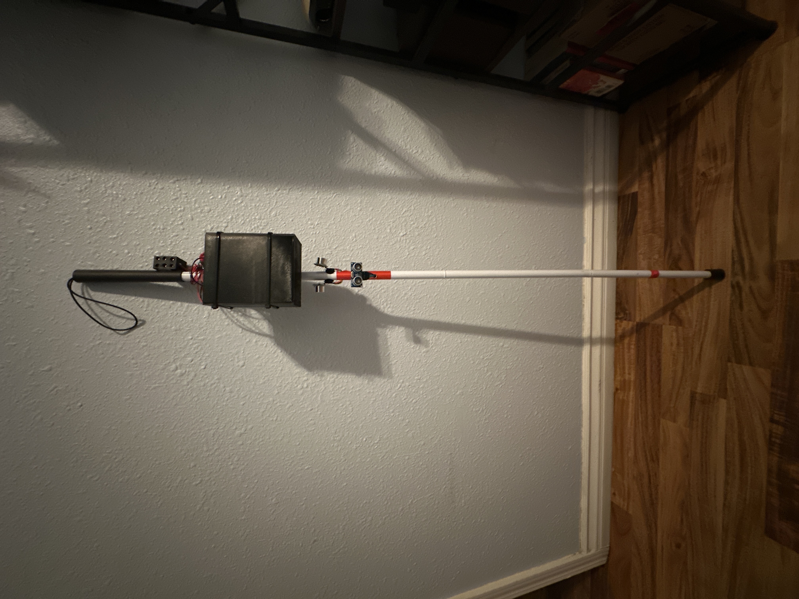

Ultrasonic Walking Cane

By: Nolan Santellanes, Mykael Chavez & Miguel Almejo
Overview: This project was the capstone project for our major. Its function was to help people that are visually impared know when there's an
object or wall either on the left, right, or in front of them and warn them through the use of a braille system.
The components used where:
- TM4C123 Microcontroller
- XL6009E1 power booster
- 3 x L298N H-Bridge motor driver
- 6 x Mini push-pull solenoid actuators
- 3 x SRF05 Ultrasonic Sensors
- 6 x AA batteries
- Standard folding walking cane for the visually impared
Presentation Here: Ultrasonic Walking Stick By: EchoNav